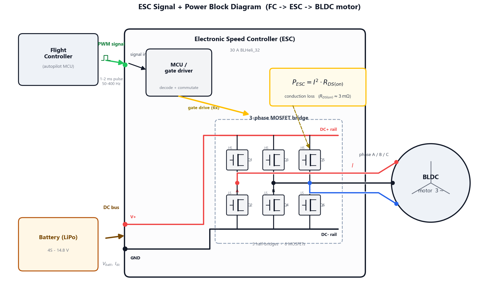

Power Electronics: ESC Calibration, PWM Mapping & Dead-Band Verification
Lab Procedure: ESC Anatomy, Calibration, Protocol Latency & Thermal Sizing
This document outlines the step-by-step workflow for Experiment 4: Power Electronics — ESC Anatomy, Throttle Calibration, Protocol Latency & Thermal Sizing. The experiment runs across two modules and four stages. Module 1 covers the ESC's anatomy and its live throttle calibration; Module 2 covers signal-protocol latency and thermal sizing.
The Continue to Module 2 button appears only after both Module 1 tabs are complete: every component inspected on Tab 1 and the calibration recorded on Tab 2.
Stage 1: Component Explorer — ESC Anatomy (Module 1 · Tab 1)
Objective
Learn what an ESC is made of before calibrating it — identify every component on the board and the role it plays in turning a small throttle command into high-current three-phase motor power.

Step-by-Step Procedure
- Launch the simulator. Module 1 opens on Tab 1 · Component Explorer, showing the ESC as an exploded 3D board (no live experiment here — this stage is pure anatomy).
- Pick an ESC platform from the breakout gallery (e.g. 20A BLHeli_S, 30A BLHeli_32, 4-in-1 45A / 60A stacks). The teardown spec card lists its topology, firmware, continuous / burst current, MOSFET count, conduction resistance RDS(on), supported protocols, board size and mass.
- Move around the board. Left-drag to orbit, right-drag (or two-finger) to pan, and scroll to zoom. Toggle Teardown / exploded view to collapse or fan out the layers.
- Inspect every component. Click each callout in the 3D view, or each entry in the Components list on the left. For each part the Component Datasheet panel explains what it is, its role, and a design note. The components are: FR4 substrate, solder mask & silkscreen, castellated I/O pads, power MOSFETs, MCU / gate-driver, electrolytic capacitor(s), SMD passives, signal connector (JST), battery leads, and mounting screws.
- Complete the tab. The datasheet tag counts your progress (e.g. 7 / 10 viewed). Once every component has been inspected it reads all 10 viewed ✓ — Tab 1 is complete. (This is one of the two requirements that reveal the Module 2 button.)
Stage 2: Calibrate & Commission — Expected vs Obtained (Module 1 · Tab 2)
Objective
Store the throttle endpoints, arm the ESC safely, then map the real ESC's pulse→throttle response and compare it against the ideal straight-line map — measuring the dead-band and any calibration error.
Step-by-Step Procedure
- Open Tab 2 · Calibrate & Commission. In the left panel set the Drivetrain: the motor load (the catalogue mirrors Experiment 1), the battery pack and the state of charge.
- Store the endpoints. Click Store endpoints. The ESC records 1000–2000 µs and snaps the stick to idle. (Selecting a calibration fault first marks the stored endpoints invalid.)
- Arm at idle. Click Arm ESC. Arming always brings the stick to idle first, so the ESC arms cleanly and the HUD reads ARMED. Disarming is allowed at any throttle.
- Run the sweep. Click Run 0-100% sweep. The pulse sweeps across the band and the motor responds while armed; a live green dot tracks the current pulse on the chart.
- Record five points. Click Record point at five different pulse widths during the sweep. Each logs into the Recorded Readings table (Pulse, Ideal %, Measured %, Error) and plots on the chart:
- the dashed blue Expected line — the ideal linear map you assumed, and
- your amber Obtained points and curve — the real ESC, including the idle dead-band, any endpoint fault, and receiver jitter.
- Read the result. Stop the sweep. With five points logged, two clean result panels appear — Expected and Calibrated side by side — and the chart status reports the RMS and worst-case error between them.
- Try the calibration faults. Use the Endpoint Condition selector and re-sweep to watch the Obtained curve distort:
- Inverted endpoints — idle reads ~100% (the curve runs backwards): the "spins to full on power-up" hazard.
- Minimum endpoint too high — the low third of the stick is dead and the live range is compressed.
- Noisy receiver jitter — the recorded points scatter around the true curve. A stored fault blocks arming, exactly as a real ESC refuses a bad calibration.
- Sign off. The Experiment Sign-off checklist must show Components inspected (Tab 1), Endpoints stored, Armed at idle, Dissipation under 2 W, Hotspot under 80 °C, and Calibration points (≥ 5). With both tabs complete, the Continue to Module 2 button appears.
Stage 3: Protocol & Latency (Module 2 · Tab 1)
Objective
See command latency as a real, visible delay; separate latency from resolution; and choose a flight-ready signal protocol.
Step-by-Step Procedure
- Open Module 2. Click Continue to Module 2 —
index1.htmlloads on Tab 1 · Protocol & Latency, restoring your ESC, motor and protocol. - Watch the command-vs-response scope. The chart shows two traces: a blue command (your stick stepping up and down) and an amber ESC response that trails it by the protocol's latency. The Δt readout and the Latency card show the lag.
- Step through the protocols. Use the Command protocol selector — Standard PWM 50 Hz, Fast PWM 400 / 500 Hz, OneShot125, DShot300 / 600 — and watch the amber response chase the blue command:
- 50 Hz — the response lags ~20 ms (a wide, obvious gap).
- 400 Hz — the gap shrinks to ~2.5 ms.
- DShot — the response snaps almost on top of the command (tens of microseconds).
- Separate resolution from latency. Note the Resolution card stays at 1000 steps for every analog rate — resolution is set by the timer tick, not the refresh rate. DShot jumps to ~2000 levels with no calibration and no dead-band.
- Record to compare. Log a reading on each protocol to build the side-by-side comparison table.
- Lock in a flight-ready protocol. The stage signs off only when you settle on a protocol with latency under 5 ms — Standard PWM 50 Hz is too slow to pass (it is the deliberate "fault" here). Choose 400 Hz, OneShot or DShot to complete the run-sheet.
Stage 4: Thermal Sweep & Heatsink Sizing (Module 2 · Tab 2)
Objective
Compute the ESC's conduction loss, run a thermal sweep to find the current at which the junction reaches 80 °C, and size the cooling.
Step-by-Step Procedure
- Open Tab 2 · Thermal Sweep. Set the Sustained Load: the phase current (use the Hover / Full load presets seeded from Experiment 1) and the Ambient temp.
- Read the live derivations. The derivation cards update live: Pack Voltage & Loaded RPM, Conduction Loss P = I2·R(T), and Thermal Equilibrium T = Tamb + P·Rth. The MOSFET junction probes and the HUD hotspot track the operating point.
- Run the sweep. Click Run thermal sweep. The T–I curve is plotted and the 80 °C passive-current threshold is found and reported.
- Read the verdict. The verdict card shows PASSIVE OK / HEATSINK REQ / OVER LIMIT. For a 30 A ESC (RESC ≈ 3 mΩ): at 25 A → 1.875 W (passive OK); at 30 A → 2.7 W (heatsink required).
- Enable the hot-resistance model. Toggle Hot-resistance feedback to let RDS(on) climb with temperature and solve the self-consistent hot operating point — a bare 30 A ESC settles at ≈ 93.6 °C, over the 80 °C limit.
- Fit the heatsink and re-run. Toggle Clamp-on heatsink to drop Rth and run the sweep again: the safe threshold current rises and the hotspot falls to ≈ 53.4 °C — safely under the limit.
- Record and hand off. Log readings; the dissipation value and the heatsink decision are saved (
vlabExp4_escDissipation,vlabExp4_heatsinkRequired) for Experiment 9 (Thermal Management), completing Experiment 4.